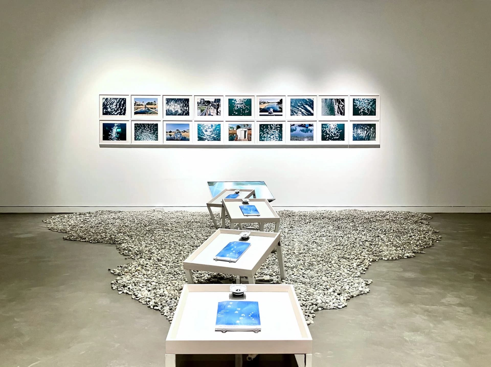
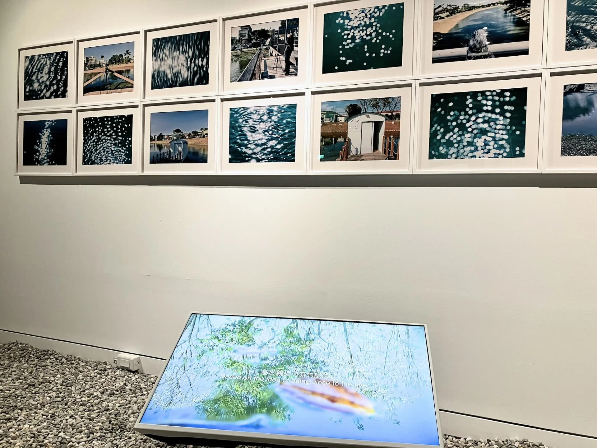
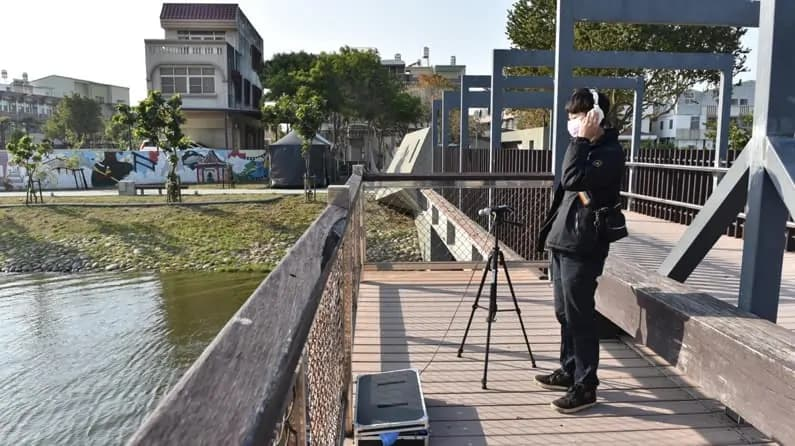
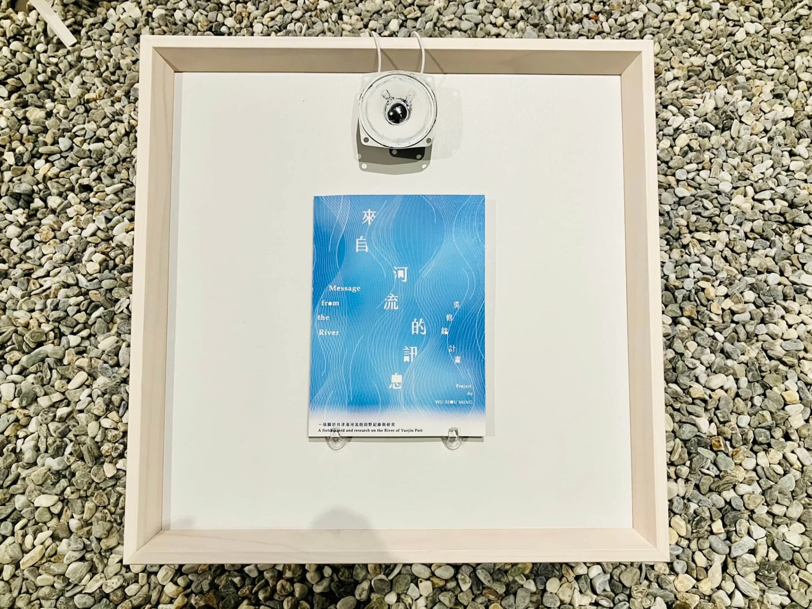
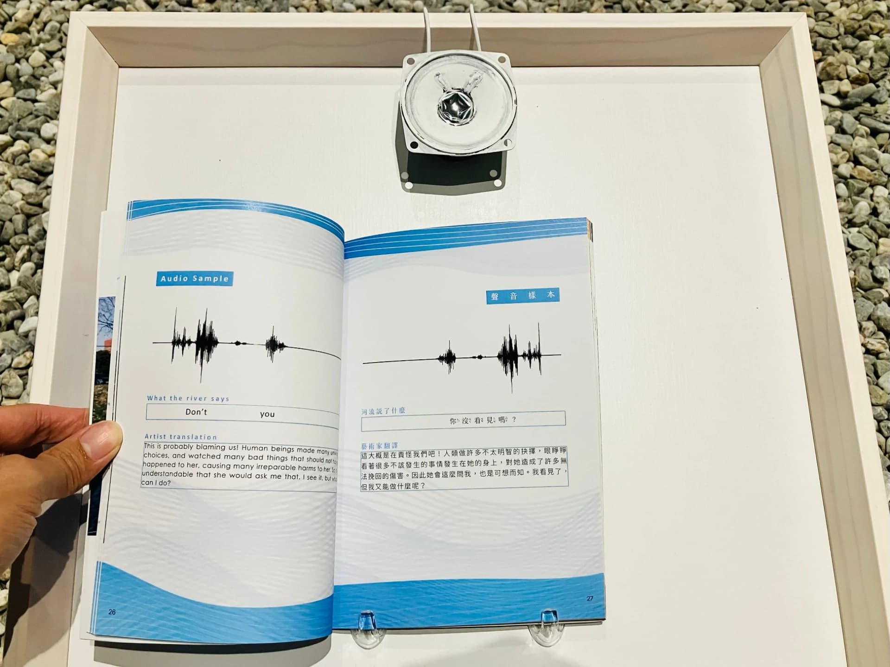
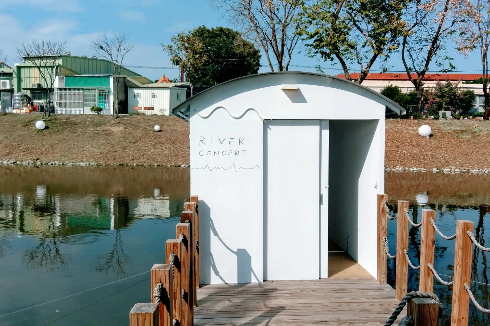

×
Art Project • 2022






I started this project with a local group based on the intention of being close to the river. I started sound recording on the banks of rivers in 2020, using hydrophones to go deep into the water to record underwater sounds. We recorded and collected sound samples in different river basins, including upstream and downstream, and found that the sounds of different basins have their own characteristics, reflecting the geographical and spatial patterns of the river banks and the ecology of the surrounding environment.
We develop a set of audio technology, the system refers to the characteristics of emotion recognition and the theory of harmony, and use the data of audio analysis to perform operations, and compile the content of the database into an artificial intelligence music system, output a non-fixed music structure automatically composed instant. So we can hear the underwater sound into a dynamic piece of music and let the river play the music itself. Through the technology of Frequency-modulation we obtain audio content close to the spectrum of the human voice, and input the sound into the speech recognition system. In this way, the system recognizes many unexpected words and sentences, so that we seem to have a chance to know what the river is about to say. These "messages" are a kind of mythology of human beings since ancient times, a world where all things and human beings can coexist harmoniously, so that we have more imagination space for the relationship between nature and human beings.